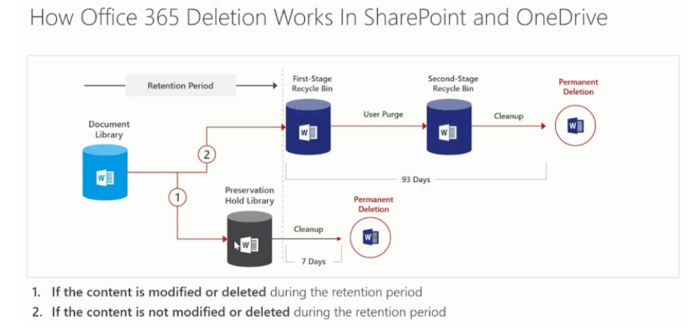
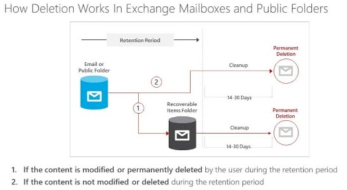
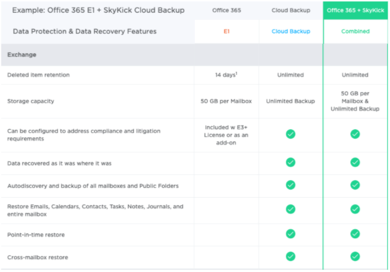
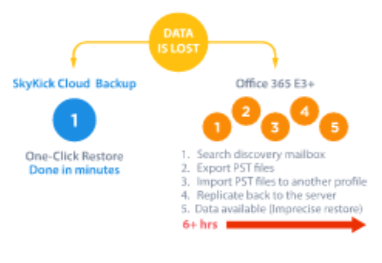

Backing up Microsoft 365 : Why Bother?
‘But surely Microsoft back this up for me ?’ No, they don’t.
Microsoft provides powerful services within the Microsoft 365 platform– but a comprehensive backup of your Microsoft 365 data is not one of them.
Microsoft give you data availability and resilience, not historical data backups.
Microsoft has physical security in their data centers. They offer data storage replication and redundancy.
None of the above equate to backing up your data (in order to restore it in the event of a problem).
Microsoft offer limited recovery periods* from deletion of your data, but if your data is compromised then so are the copies they keep.
With Microsoft 365, it is your data, you control it and it is your responsibility to protect it.
Of over 1,000 IT professionals surveyed**, 81% experienced data loss in Microsoft 365, from simple user error to major data security threats.
Microsoft 365 is not just your email. It is all the data which is provided by M365 - Teams data (including files stored here), Sharepoint Online file storage, OneDrive data.
*Data retention periods vary and can be altered, but the maximum top level ‘recycle bin storage’ is approximately 30 days
**Source: https://www.veeam.com/backup-microsoft-office-365.html
Example : MS SharePoint Online / OneDrive retention

- Microsoft offer limited recovery periods from deletion of your data - and the first stage recycle bin is generally 30 days in scenarios as above.
Example : MS Exchange Online

- Microsoft offer limited recovery periods from deletion of your data - and the first stage recycle bin is up to 30 days in scenarios as above.
Why do I need to backup Microsoft 365 data?
Ask yourself: How often do we restore user files on a regular day ?
Then ask, What if we couldn’t restore a M365 located user file?
If users overwrite or lose data, it can be restored quickly.
If users leave, you don’t need to maintain their mailboxes (or license them!)
If ransomware corrupts any of your data, uninfected versions can be restored from backup which is not part of the M365 Tenancy
This is true across your M365 Tenancy: Teams / Sharepoint Online / Exchange Online / OneDrive
Traditional File Servers are increasingly being replaced by Sharepoint Online and OneDrive
Teams file storage (along with chat history) is much overlooked as it is considered to be short term use only, but Teams File Shares are a logical place for commonly shared files to reside rather than in a traditional file structure
Microsoft do not back up these File Shares
If employees (such as those who are about to leave or go through discipline) decide to hide or delete data, you’ve already safely backed it up.
It’s another copy of your data in another location !
Advantages to backing up Microsoft 365 data
Covers your business with regard to Legal Retention Periods and Industry Regulations on data retention
Microsoft Litigation Hold may not provide you with enough cover.
If Litigation requires immediate access to user data, you have it.
Reduced licensing costs for live user accounts. If a user leaves you do not need to maintain the mailbox / teams / sharepoint / onedrive data for that user for archive purposes, it will be backed up !
Once again, it’s a second copy of your data !
How can I protect my data in Microsoft 365 ?
Backups:
Implement a 3rd Party product to take your M365 data and duplicate it in a disconnected location:
Alternate Cloud Locations (not a definitive list)
Veeam Cloud Services
Amazon Web Services
Local Storage at your location or your DR location
Product set to use to do this
Multiple vendors exist, but the leaders to consider are:
Veeam
Arcserve
SkyKick
BackupVault
BackBlaze
Basics:
Use MFA for logons. This will reduce the likelihood of accounts being compromised.
Use Conditional Access Policies to satisfy security requirements, geographic location and device capabilities. This will aid in security.
Examples of Microsoft 365 Backup Technologies
On the following slides there are illustrations of an ‘on premise’ backup system, and a ‘cloud based’ backup system.
These are purely examples of known popular systems and their inclusion here is simply as examples and are not endorsements from MHCLG.
Example : Veeam for 365
Veeam offers an on premise companion product to its core product which is exclusively for M365.
It can take the contents of your M365 applications and send it to on-premise or cloud backup storage for storage, versioning and recovery at a very granular level.

https://www.veeam.com/veeam_backup_microsoft_office_365_datasheet_ds.pdf
Example: SkyKick
SkyKick is a cloud based backup system for the Microsoft 365 Suite (Exchange Online, Sharepoint Online, OneDrive, Teams) which adds richer backup features to those which Microsoft provide.
These will give you a much more granular set of recovery options.
This image details the Exchange Element, however the options for Sharepoint/OneDrive and Teams are equally feature rich.

https://www.skykick.com/office-365-backup/cloud-backup-suite-for-office-365/
Recovery times
Assuming your deleted data is still available in M365 for recovery, the recovery times from a 3rd party product such as Veeam365 or SkyKick is much shorter, as illustrated in this graphic from SkyKick.

To summarise
Microsoft do not provide backups, just availability.
Microsoft Online ‘Recycle Bins’ hold deleted items for a short period of time (as low as 30 days for some 365 Offerings)
Without additional backups, corrupt data will prove very difficult to recover from
Protection from deliberate deletions are not covered by default with M365.
More data is moving into M365 as organisations move away from traditional file servers, and by default in M365 the recovery points may not be sufficient to meet your BC/DR plan derived RPO’s
Backing up data to outside of M365 will give a greater opportunity for recovery, and in a much shorter period of time, thus enabling you to meet your RTOs
Teams file storage is often overlooked, and backing it up will bring it into line with your regular file storage for RPO/RTO
You can retain backups of former users without need to license the user in M365 for as long as the data may be required.
You can store your backups locally onsite, in another cloud provider or offsite.